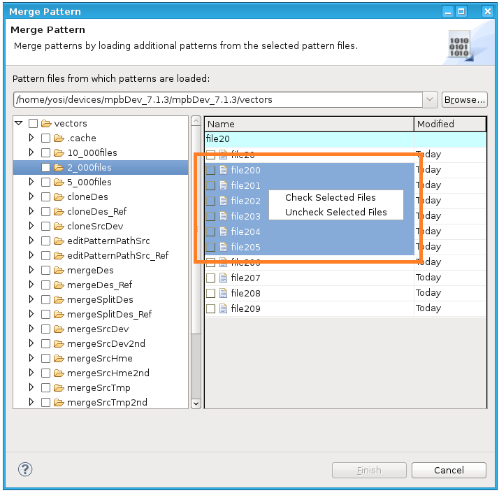

Merging and splitting pattern files
The Merge Pattern dialog is used to merge or and split pattern files.
About this task
You can merge individual pattern files into an existing pattern master file setup.
And you can split large pattern files and save the single patterns in individual files.
You can merge files from multiple locations in your file system into one pattern file at any location. You can also split a large pattern file into multiple pattern files and save those at any location. The actual split of the file happens when you save the file, not during the merge operation.
Before you begin
To be able to reload your current setup (before merging any patterns) in case you are not satisfied with the result, you must have saved all modified patterns prior to attempting the merge. If there are any modified but unsaved patterns, the system prompts you to save them.
Procedure
-
In the Test Program Explorer right-click the
 Pattern component and select Merge (Pattern Files). The Merge
Pattern dialog opens.
Pattern component and select Merge (Pattern Files). The Merge
Pattern dialog opens.

Results
The resulting files will be marked with the asterisk (*) symbol. The actual split or merge of the files happens when you save the files, not during the split or merge operation.
The system will load the patterns in the appropriate order (subroutines > main patterns > bursts).
Functional changes
- Introduced in SmarTest 7.1.3
- SmarTest 7.5.0: Bulk selection of patterns within a selected folder.